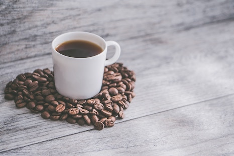

Prototype Brainstorm Ideas
Vegan Lifestyle
This site would include cruelty-free makeup and clothing brands, vegan recipes, vegan friendly restaurants, benefits, and tips of a vegan lifestyle. The target audience would be anyone who is interested in developing a more vegan lifestyle.
Post and Bean Cafe
Post and Bean is the cafe located in the Design Building at UMASS Amherst. I currently work there, and there are no websites for specific dining locations on campus. All dining information is located on a clustered app called UMASS dining. On this website, I would include Post and Bean's daily hours, the menu, and nutrition facts. The target audience would be UMASS students and faculty.

College Survival
This site would include study tips for UMASS students, as well as the best places to study, places with student discounts, daily college advice, etc. The target adudience would be UMASS Amherst Undergraduate students, but most of the content could be helpful for all students.